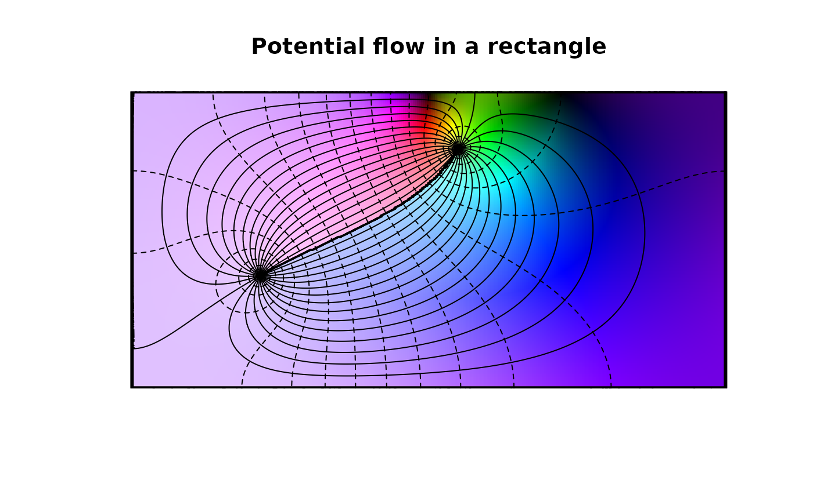

Jacobi form of the elliptic functions
sn.RdJacobian elliptic functions
Usage
ss(u,m, ...)
sc(u,m, ...)
sn(u,m, ...)
sd(u,m, ...)
cs(u,m, ...)
cc(u,m, ...)
cn(u,m, ...)
cd(u,m, ...)
ns(u,m, ...)
nc(u,m, ...)
nn(u,m, ...)
nd(u,m, ...)
ds(u,m, ...)
dc(u,m, ...)
dn(u,m, ...)
dd(u,m, ...)Examples
#Example 1, p579:
nc(1.9965,m=0.64)
#> [1] -1392.111
# (some problem here)
# Example 2, p579:
dn(0.20,0.19)
#> [1] 0.9962527
# Example 3, p579:
dn(0.2,0.81)
#> [1] 0.984056
# Example 4, p580:
cn(0.2,0.81)
#> [1] 0.9802785
# Example 5, p580:
dc(0.672,0.36)
#> [1] 1.174019
# Example 6, p580:
Theta(0.6,m=0.36)
#> [1] 0.9735688
# Example 7, p581:
cs(0.53601,0.09)
#> [1] 1.691832
# Example 8, p581:
sn(0.61802,0.5)
#> [1] 0.5645758
#Example 9, p581:
sn(0.61802,m=0.5)
#> [1] 0.5645758
#Example 11, p581:
cs(0.99391,m=0.5)
#> [1] 0.7499963
# (should be 0.75 exactly)
#and now a pretty picture:
n <- 300
K <- K.fun(1/2)
f <- function(z){1i*log((z-1.7+3i)*(z-1.7-3i)/(z+1-0.3i)/(z+1+0.3i))}
# f <- function(z){log((z-1.7+3i)/(z+1.7+3i)*(z+1-0.3i)/(z-1-0.3i))}
x <- seq(from=-K,to=K,len=n)
y <- seq(from=0,to=K,len=n)
z <- outer(x,1i*y,"+")
view(x, y, f(sn(z,m=1/2)), nlevels=44, imag.contour=TRUE,
real.cont=TRUE, code=1, drawlabels=FALSE,
main="Potential flow in a rectangle",axes=FALSE,xlab="",ylab="")
rect(-K,0,K,K,lwd=3)
